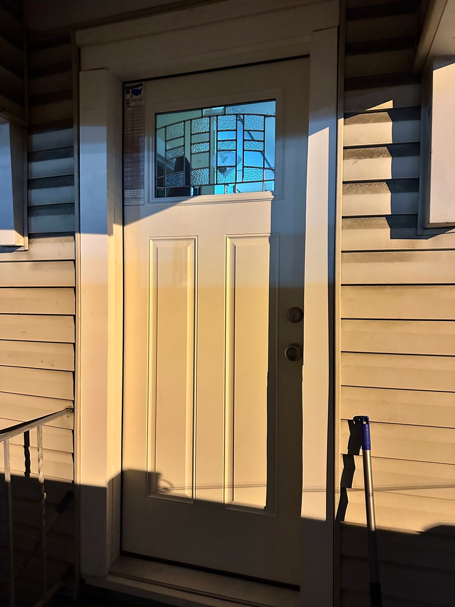
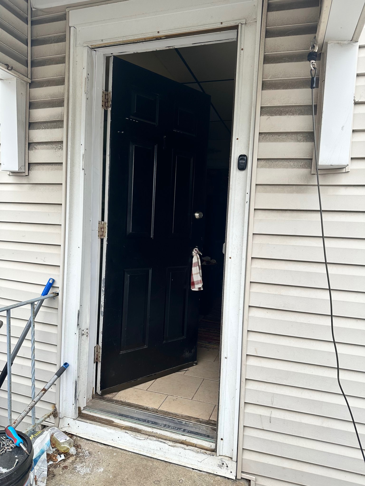
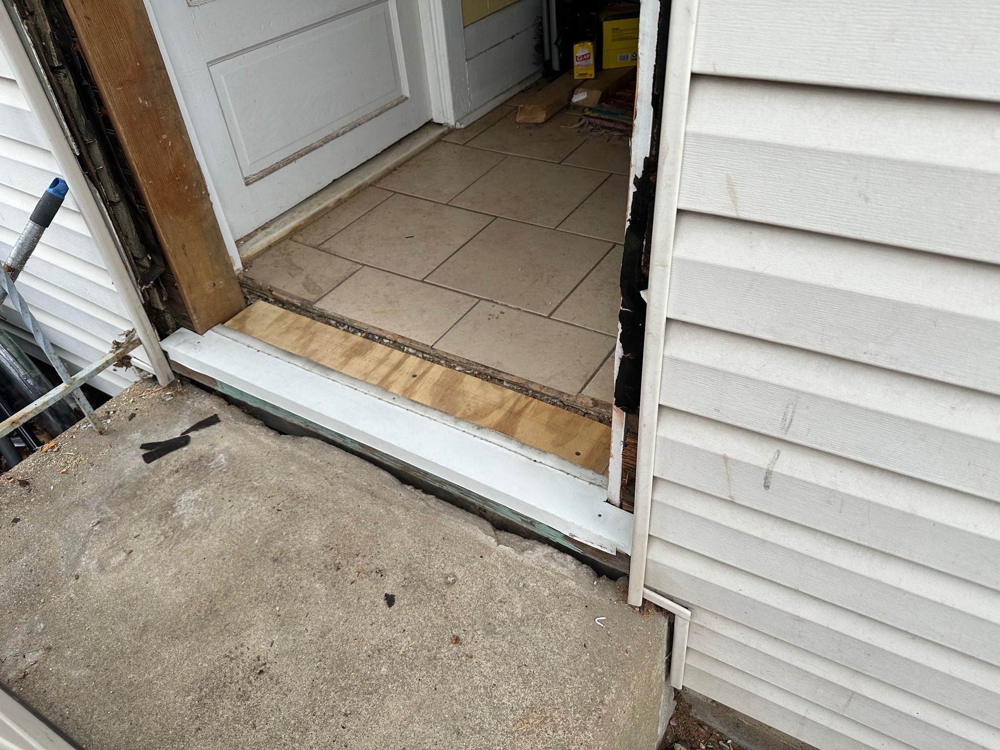

Exterior Door Replacement in South Jersey
South Jersey Repairs helps with exterior door replacement, threshold repair, trim work, sealing, seller prep, rental turnover repairs, and clean finished installs for homeowners and property owners.

We Fix It. We Haul It.
Recent Exterior Door Project
This project shows the process from the older door and worn threshold area, through demo, to a clean finished exterior door install.


Exterior Door Replacement
Replacement help for worn, damaged, sticking, leaking, or outdated exterior doors.
Threshold & Trim Repair
Repair planning for lower door areas, trim, sealing, and finish details around the opening.
Seller Prep & Rental Turnovers
Door replacement is a high-impact repair for homeowners, sellers, landlords, and property managers preparing a home.
Exterior Door Replacement Guide
Read the exterior door replacement guide with the real steps homeowners should understand: measuring, demo, threshold prep, shimming, sealing, trim, and final checks.
What Photos Help?
- Outside of the door and trim.
- Inside trim and flooring at the threshold.
- Close-up of rot, gaps, leaks, or damage.
- Any label or measurement from the existing door if available.
Ready to Send Photos?
Text clear photos, your town, and what you need fixed, hauled, replaced, cleaned out, or prepared. South Jersey Repairs helps homeowners, sellers, landlords, and property owners across South Jersey.